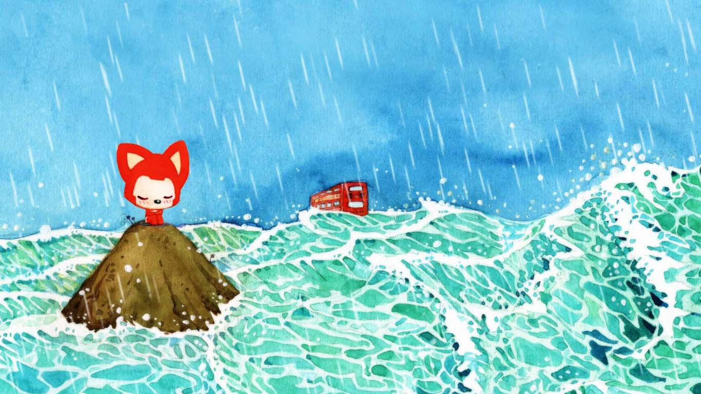

圣诞快乐~
按键盘 "↓"或下滑屏幕 圣诞老人要讲故事啦
过去的Young一直是一个人生活，享受着孤独，也憧憬着改变

一个人的长廊

一个人的山岗

一个人的地铁

一个人的游乐场

他依然乐观，微笑着，等待着

生活难免有风风雨雨

他总是能够轻松的应对

并且面带阳光、自信的微笑

生活也不总是一帆风顺
但他每次都能勇敢的面对
随时准备接受生活的挑战


他相信时间和等待会带来一切
明天会遇到她吗？他不敢相信

他去问大树，我的爱情在哪里？
大树告诉他，也许就在不远的拐角

于是，Young一个人继续
走在茫茫的雪地上

直到有一天Young遇到了Lucy

Lucy的乐观，开朗，让Young有了更加灿烂的笑容

这就是Young的拐角吗

他愿意去了解Lucy的一切

他相信某个人的微笑会冲刷掉自己所有的疲惫
他希望每个阳光明媚的清晨，都能看到彼此的微笑

然后两个人一起出去玩

在公交车上一起路过这个城市的繁华

无论多晚
Young都希望自己是送Lucy回家的那个人

Young希望Lucy能好好对待自己的喵星人

Young会是Lucy的逛街助手

无论何方，Young的旁边都有一个Lucy的专属位置

Young也和Lucy一样成为了一个吃货

Young的小窝就是Lucy的港湾

Young会为Lucy学习新的技能

煮饭

每天早上，他希望Lucy吃着自己做的美食

然后在同一个站台，高高兴兴的一起上班
有Lucy的地方
Young一定在
无论是以何种形式

他们偶尔也会吵架

Young不想这样


一定是我有什么做的不对，Young在想
如果没有Lucy的笑容，窗外就没有风景

如果没有Lucy在身后


Young又怎会飞的更高更远
每个人都有一身的刺，直到遇到对的人
Young会为了Lucy拔掉身上的刺


他是一直守护在狮子座身旁的巨蟹座
两个人在一起就像花草一样
需要用包容来浇灌

也许随着时光流逝
他们不再保有最初的那份新鲜感


但在每一个平凡的日子里 他们彼此珍惜这份小幸运 午后的阳光，雨后的街道 都能让他们平静感受对方

想想这个世界这么大 他好开心 因为这条路上 他不再孤单
生活的精彩并不在于那些轰轰烈烈的故事
而在于看似无用，平平淡淡的一点一滴

Young相信后面的每天都会是快乐的
简简单单，体会着一起的每一个刻

爱情不在于精确地计算，不在于每一次新鲜的尝试，也不在于错误与原谅，而在于责任与担当，即使钟鼓楼变成废墟，也要一起面对今后的时光


Lucy：永远有多远？
Young：比时间多一秒就是永远，我会永远在你旁边
Lucy：世界有多大？
Young：你走到哪里，世界就有多大
How Long will I Love You


圣诞快乐

故事讲完了，看来圣诞老人是一只可爱的程序猿呢
无论精彩、平淡，都希望这是你喜欢的。
-- 按“Esc"键有惊喜